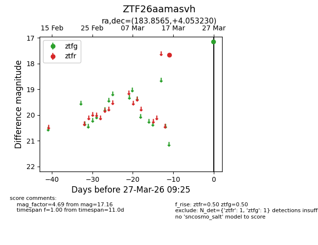
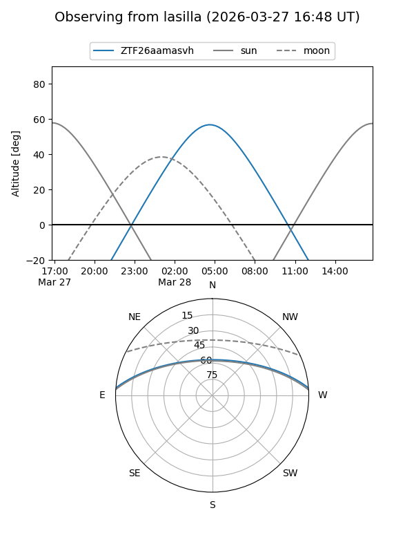
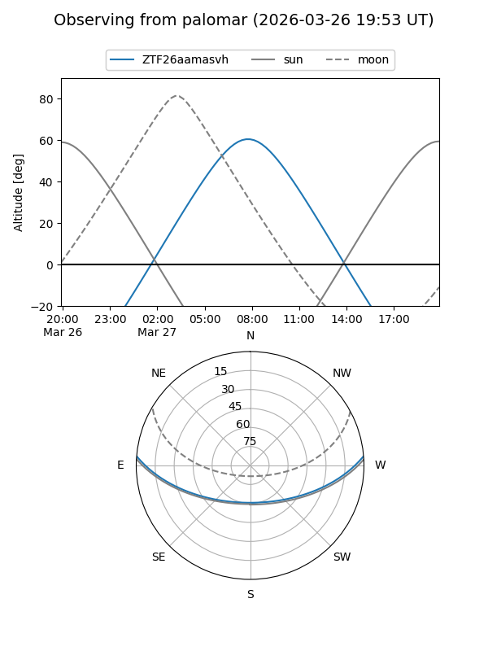

ZTF26aamasvh
Target ZTF26aamasvh at 2026-03-27 09:28
Aliases and brokers:
FINK: link
Lasair: link
ALeRCE: link
alt names
ZTF26aamasvh (ztf,fink_ztf)
Coordinates:
equatorial (ra, dec) = 183.8565,+4.05323
equatorial (HMS+DMS) = 12:15:25.56,+04:03:11.63
galactic (l, b) = (280.9312,+65.37514)
Flags:
Photometry:
last ztfg=17.16, ztfr=17.66
1 ztfg, 1 ztfr detections
Lightcurve

Visibility


Additional plots